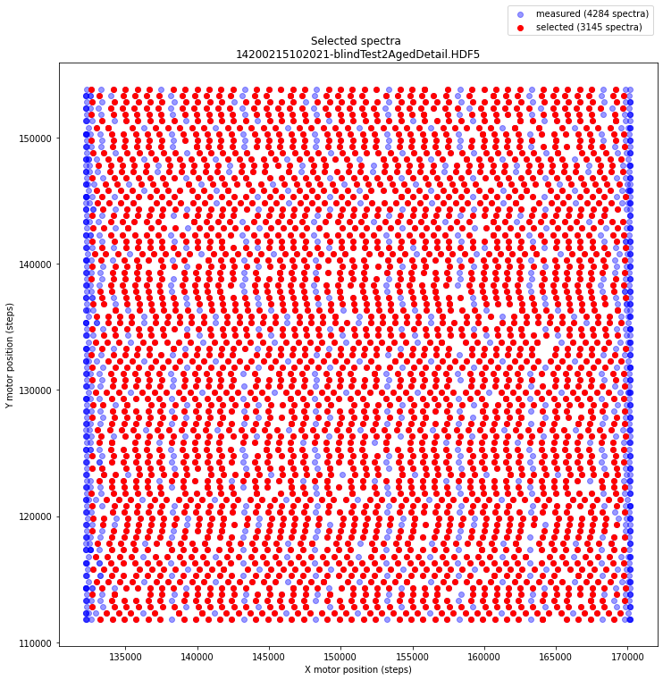
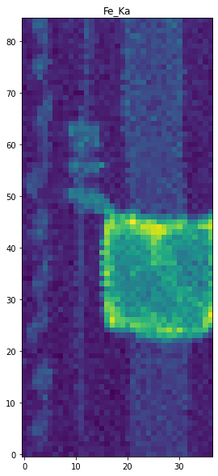

import cronomaxrfGridify by selection
How to convert wobbly positions into a regular spectral image data cube?
Now that we have a rough idea about the contents of the different datasets, we are ready to visualize the spectral data. As we shall see there is a problem with the motor positions that we need to resolve. In order to make clear what the issue is, we need to plot the (x,y) motor positions and the selected spectra. Information about the motor positions and selected spectra is stored in datasets 17 and 28.
The actual spectral data that we would like to visualize in element maps is stored in a two dimensional table. Note that the table does not contain any information about the pixel position at which each spectrum was measured.
from cronomaxrf import read_datasetscrono_filename = '14200215102021-blindTest2AgedDetail.HDF5' # 50 Mb
datasets = read_datasets(crono_filename)
for i, d in enumerate(datasets):
star = ' '
if i in [14, 17, 26, 28]:
star = '*'
print(f' {star}[{i}] {d.name}') *[14] /XRF/EnergyVector
*[17] /XRF/MotorsPositions
*[26] /XRF/Spectra
*[28] /XRF/SpectraSelectedIndexOne would expect to find a rectangular array of sensor positions. Now let’s plot the (x, y) positions of all 4284 measured spectra (blue) and see which 3145 positions have been selected (red) by the Crono software.

Mm, the xy positions of the sensor are a bit wobbly. We observe 85 rows of selected (y) positions. In each row we count 37 selected spectra (red dots). In order create a regular spectral image cube, the Crono software throws away quite some data (all blue dots). It seems that one could do a better job by interpolating. This is the topic of the next section.
For now let’s follow the crude but effective strategy of the Crono software for exporting to a regular grid (gridify) by selecting the red dot spectra and save as regular hdf5 file so that Ana can process the data with her own software. Although our tiny demo data files fit well into memory, typical MA-XRF data files can be rather big. In order to be ready for these big files we make use of excellent python package dask that enables efficient processing of files that do not fit into memory by directly reading and writing to our hard disk.
For exporting the selected spectra from the crono HDF5 file into a regular spectral image hdf5 file, now simply use the gridify() function as shown below.
from cronomaxrf import gridifygridify('14200215102021-blindTest2AgedDetail.HDF5')Overwriting existing file: 14200215102021-blindTest2AgedDetail_GRIDIFIED.HDF5...
Converting '14200215102021-blindTest2AgedDetail.HDF5':
(1/2) Writing dataset '/spectra' with shape (85, 37, 4096) to hdf5 file...
[########################################] | 100% Completed | 0.2s
(2/2) Writing dataset '/energies' with shape (4096,) to hdf5 file...
[########################################] | 100% Completed | 0.1s
File size: 25.0 MB'14200215102021-blindTest2AgedDetail_GRIDIFIED.HDF5'The exported (gridified) HDF5 file contains the selected spectral data cube that we need for further processing. Typically one now proceeds to obtain element maps. To see how this is done we can compute the iron map from the Fe_Ka band. To easily inspect the contents of our freshly created HDF5 file, use the read_datasets() function again. This file only contains two datasets.
datasets = read_datasets('14200215102021-blindTest2AgedDetail_GRIDIFIED.HDF5')
for i, d in enumerate(datasets):
print(f' {star}[{i}] {d.name} {d.shape} {d.dtype}') [0] /energies (4096,) float32
[1] /spectra (85, 37, 4096) uint16
[2] /wavelength (4096,) float32We can make a map for iron by integrating over the 6.1-6.7 keV energy band.
# Fe_Ka band
energies = datasets[0][...]
cube = datasets[1][...]
is_iron_Ka_band = (energies > 6.1) * (energies < 6.7)
n_channels = np.sum(is_iron_Ka_band) # number of channels in the Fe_Ka band
# integrate FeKa band
FeKa_slice = cube[:,:,is_iron_Ka_band]
FeKa_map = FeKa_slice.sum(axis=2) / n_channels
# make plot
fig, ax = plt.subplots(figsize=[14, 10])
ax.imshow(FeKa_map, origin='lower')
ax.set_title('Fe_Ka map');
That is it! We no longer depend on the Crono software for exporting the spectral data in a regular hdf5 file.
In the next section we will look into improving the export by interpolation…
API
plot_the_problem
plot_the_problem (crono_filename)
Create a plot that displays the (wobbly) motor positions of the scan.
Selected spectra that will be used for export to a regular grid are colored red.
gridify
gridify (crono_filename, overwrite=False)
Export Crono maxrf file spectral data into regular spectral image hdf5 file.